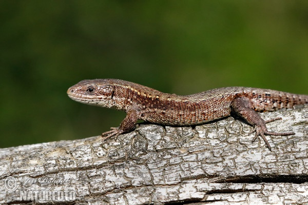
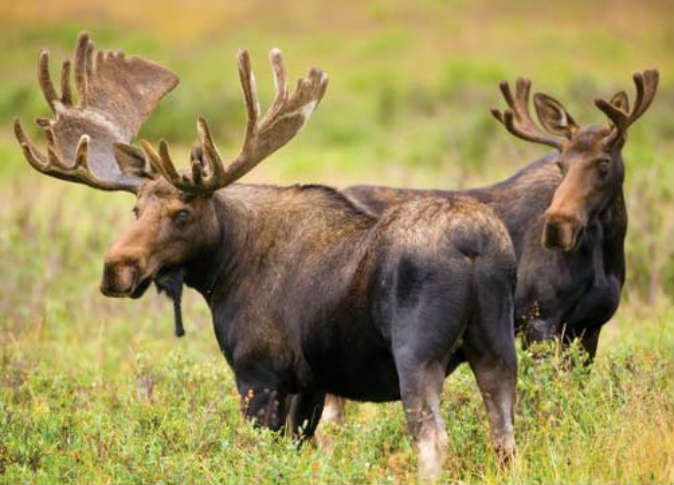
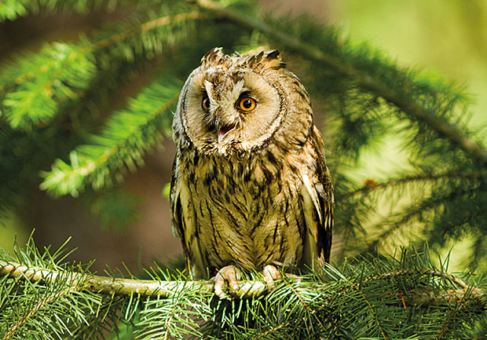

Gozdni ekosistem je kompleksen preplet živih bitij (rastlin, živali, gliv, mikroorganizmov) in nežive narave (tla, voda, zrak, svetloba), ki so med seboj tesno povezani in odvisni drug od drugega.
Gozdni ekosistem nastaja samodejno. V naravni interakciji z dejavniki okolja. Med okoljskimi dejavniki je odločilna klima. Glede na razpoložljivo toploto se gozdni ekosistemi v različnih podnebnih pasovih močno razlikujejo. V subpolarnem pasu na severu prevladuje tajga ali iglasti gozd (smreke, bora, macesna), v zmerno toplem pasu mešani listopadni gozd zmernega pasu, ob ekvatorju tropski deževni gozd...


